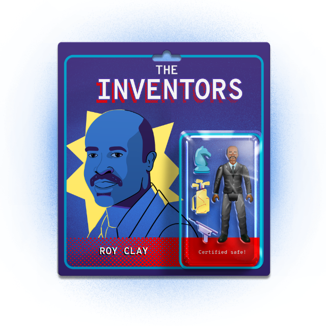

Subscribe to the podcast to receive new episodes as soon as we release them
Season 6, Episode 6
Roy Clay: The Entrepreneur Who Transformed an Industry

Roy Clay had to chase after opportunities. But landing a promising position wasn’t the finish line. Roy Clay pushed those opportunities beyond their mandate, transforming an industry in the process.
Kathy Cotton recounts how few opportunities Roy Clay had growing up—but how, later, talk of his genius helped him get his break in the tech industry. Chuck House describes how Clay’s qualifications and experience were just what Hewlett and Packard were looking for. Bill Davidow explains how Clay made his mark at HP building a department, and shaping the strategy for a revolutionary 16-bit minicomputer. And in Clay, Ken Coleman found a role model and mentor. He followed in Clay’s footsteps, and helped expand a legacy of inclusion.
00:00 - Saron Yitbarek
It's a hot summer day in Ferguson, Missouri. Early 1940s. A young man hired to mow lawns is taking a break, drinking a Coca-Cola outside a local shop. But he's a Black young man, and he's taking that break on the wrong side of town.
00:22 - Kathy Cotton
He's picked up by the police and handcuffed and taken to the station.
00:27 - Saron Yitbarek
70 years before Michael Brown was shot and Ferguson was rocked by protests, conflicts with the police were a regular part of life for the city's Black population. Documentary filmmaker, Kathy Cotton of “A Place at the Table,” explains.
00:43 - Kathy Cotton
The name of the house and a name of the people in the house, they don't care. They take him to jail because he is on the wrong side of town. That was a normal occurrence for a lot of Black people if you were walking in a white neighborhood. There's a mindset that has been in this country from day one. Hopefully we're going to try to change that somehow, but we'll see. We'll see how it goes.
01:08 - Saron Yitbarek
This is a story about opportunities, who gets them and who doesn't. That teenager the police picked up? His name was Roy Clay. And years later, when he was finally given an opportunity to shine—when he was finally allowed to show the world what kind of work he could do—Roy Clay would remake one of the world's most powerful tech companies. And when he did, he also lifted up a whole generation of tech pioneers.
01:40 - Saron Yitbarek
I'm Saron Yitbarek and this is Command Line Heroes, an original podcast from Red Hat. All season long, we're celebrating the leaders and inventors that the history books sometimes leave out. Tech trailblazers, who had to fight against the tide while working to change the world. And the story of Roy Clay's phenomenal career doesn't just matter because of his personal accomplishments. When he finally got a chance to do the work he came to do, he was going to bring a lot more people along with him. That's why his story matters. Roy Clay reshaped and redefined Silicon Valley itself.
02:23 - Saron Yitbarek
Years before the U.S. Supreme Court made segregation illegal, Roy Clay's parents, who saw their son's potential, worked to get him into an all-white high school. He became the top student, despite facing challenges being the only Black kid in school. His parents encouraged him to excel wherever he could. He shined, especially in math. Next, Clay graduated as the first Black person to earn a mathematics degree from Saint Louis University. This was 1951. And brilliant as Clay was, searching for meaningful work in tech was at first pretty futile. Hiring managers liked the way he looked on paper, but they balked when the interview happened and a Black man walked through the door.
03:15 - Saron Yitbarek
For a few years, teaching math at high school was his best option. But Clay persevered. The space race with the Soviet Union was in full swing and math wizards like Clay were crucial for the nation's high tech engineering efforts. So, in 1956, he managed to get a job as a computer programmer at McDonnell Aircraft Corporation. A couple years after that, he was working at the Lawrence Livermore Lab, developing a computer program to track radiation fallout from atomic bombs. Next, he was building mainframes, and even a Fortran compiler for Control Data Corporation.
03:59 - Kathy Cotton
The word got out, they had this Black man who was a math genius, and through conferences or meetings or whatever, his name is still out there as this little genius.
04:10 - Saron Yitbarek
And then an opportunity—an opportunity that matched Roy Clay's potential—began to take shape. The age of vacuum tubes and punch cards was coming to a close. The age of the microprocessor was just beginning. Combined with advances in transistors and core memory, those new microprocessors opened a world of possibilities. Computers didn't need to be jumbo, room-sized mainframes anymore. Suddenly, it was possible to build a minicomputer, about the size of a hotel mini bar. Which—I know—not so mini by today's standards, but it was a game changer at the time. Smaller computers meant they could be placed in new environments. And that, combined with shrinking prices, meant a world of new practical uses. Digital Equipment Corporation produced the very first minicomputer in 1965, an $18,000 bargain compared to old mainframes and even more affordable minis were on the way. This was going to revolutionize the computer landscape. Meanwhile, over at Hewlett-Packard, one of the guys in charge wanted in on that emerging marketplace.
05:29 - Kathy Cotton
Dave Packard became interested in the idea of computers.
05:34 - Saron Yitbarek
Which was strange because...
05:36 - Kathy Cotton
Hewlett-Packard was an instrument company. It was not a computer company. It wasn't even in that area; it was measuring different things like radar and that type of thing, but not computers.
05:48 - Saron Yitbarek
Back then, Hewlett-Packard was best known for making semiconductors. But David Packard wanted his company to level up. The vision was a new line of 16-bit minicomputers. These would be only the second ever made, after DEC's. And Roy Clay had exactly the skillset to pull that off. Chuck House, a former Hewlett-Packard engineer and the author of “The HP Way,” explains.
06:18 - Chuck House
Roy's own qualifications were superb for the day. To have had time at Lawrence Livermore on some of the biggest machinery out there, he was preordained with the right qualifications.
06:35 - Saron Yitbarek
Qualifications that HP was sorely missing. While they had the very beginnings of a computer department in place, they needed an infusion of outside expertise. Bill Davidow, who headed up HP's computer marketing division at the time, remembers.
06:53 - Bill Davidow
The person who was originally running the whole computer area was an individual named Kay Magleby, and I know Kay hired Roy to run the software.
07:04 - Saron Yitbarek
But it wasn't quite that simple. At first, Clay actually turned them down. After all, he had a good gig. And what did Hewlett-Packard know about computers anyway? But Packard, who sat in on Clay's job interview, kept bumping up the offer. He even offered to pay off the mortgage on Clay's house, and eventually he was able to convince Clay that this was worth the gamble. Clay had to push though for HP to build something better, modernizing the prototype's architecture so he could write better software. Here's Bill Davidow.
07:40 - Bill Davidow
Had the architecture stayed the same, Hewlett-Packard would have no doubt been an absolute failure in the computer business. And Roy really drove the stake in the ground. He said, "We've got to change the architecture or it's impossible for me to write software." And had he not forced that issue so forcefully, HP would have been an abject failure in the computer business, in my opinion.
08:12 - Saron Yitbarek
Clay's time at HP did more than change the company. It would change his life, and even change all of Silicon Valley. Turns out, David Packard had a very particular reason for wanting to get into the mini-computer market.
08:29 - Chuck House
The problem with the DEC machine was that it was like all computers of the day. It had to be in an air-conditioned room. In short, it didn't go where voltmeters went. Voltmeters went out on manufacturing floors.
08:42 - Saron Yitbarek
Voltmeters. Simple but crucial instruments that measure the voltage on electrical circuits. So why would David Packard care that these new minicomputers couldn't share space with a bunch of voltmeters? Well, Hewlett-Packard had been the industry leader in analog voltmeters for 20 years. It was big business, and it was a business that was rapidly going digital. And digital voltmeters meant digital voltmeter data. And digital voltmeter data meant that computers, instead of people, would be gathering all that data. If a computer could live in the harsh environment where voltmeters were stationed—well, you could automate the process and save a ton of cash in the long run. But, as Chuck House was saying, voltmeters lived in such harsh environments that the minicomputers DEC was offering just weren't tough enough.
09:36 - Chuck House
These machines weren't any good for us. So we needed to build our own instrument controller. We didn't call it a computer; it's an instrument controller.
09:46 - Saron Yitbarek
Keep that distinction in mind. Instrument controller versus computer. Basically, from Hewlett-Packard's perspective, Roy Clay and his team were going to deliver an expensive, but necessary, peripheral device. A machine for a pretty limited voltmeter market. Clay was particularly focused on the software for that machine—interface software and applications that would let it monitor and read data from external instruments. Bill Davidow explains.
10:18 - Bill Davidow
You needed some basic collection of software that would enable you to get all of these things to interface with one another and that was the first thing Roy did, but the computer needed an assembler, and then it ultimately needed compilers and things like that, and Roy was involved in all of that development.
10:41 - Saron Yitbarek
As Clay got to work, they set up his new department in a few humble trailers. Documentarian, Kathy Cotton.
10:49 - Kathy Cotton
Can you imagine Hewlett-Packard in 3 trailers? But that was the computer division that had the 3 trailers. And that's where he started.
11:00 - Saron Yitbarek
So, while the executives in charge did see some utility in the computer division, they really couldn't see its larger potential.
11:08 - Bill Davidow
The computer was not very important to Hewlett-Packard. It was a $300 million instrument company, and here was this little group that was trying to get a computer business going.
11:23 - Saron Yitbarek
And yet what Roy Clay eventually helped deliver—Hewlett-Packard's very first computer—would lead to so much more than those executives imagined.
11:37 - Saron Yitbarek
Maybe being put out in those trailers was a good thing. When Clay arrived at HP's brand new computer division, he was able to break away from the white shirts and mandatory ties that dominated other departments. His team was relaxed, unorthodox. And since they were stuck in trailers, they came and went as they pleased.
11:59 - Chuck House
He loved to play golf, so he and some of his team would go play from 6:30 to 9:30. They would stroll in somewhere between 10:00 and noon from their golf game, and Hewlett just blew a head gasket over this.
12:15 - Saron Yitbarek
It wouldn't be the last time Clay and Hewlett clashed. In fact, Hewlett gained a reputation for disliking the man that David Packard had put in charge.
12:26 - Chuck House
Things were kind of at a stalemate until one night, Hewlett was an inveterate tinkerer, and he had one of these machines at home, and on a Friday night at 10:00 PM, his machine failed. And he called the plant for the hotline and got Roy's team. He says, "What are you doing there at 10:00 at night?" And they said, "Well, we work more than 40 hours; they just happen to be different hours than you told us to."
12:52 - Saron Yitbarek
Soon enough, those late nights produced the 2116A—Hewlett-Packard's first computer. Like Chuck House mentioned, the machine was designed for factory floors in harsh environments. Unlike other more fragile options, the 2116A, could operate in up to 131 degrees Fahrenheit and 95% humidity. It was rugged, reliable, hard to break. It boasted 4K of memory and an integrated circuit. Plus, a Fortran compiler and brand new software. Still, when the 2116A arrived in November 1966, Hewlett-Packard seemed determined to keep it out of the spotlight. Roy Clay had delivered the second 16-bit minicomputer ever created, but when it was first displayed at San Francisco's Joint Computer Conference that year, they wouldn't even call it a computer. They stuck with that minimizing term, “instrumentation controller.”
13:58 - Chuck House
The problem for the company was that IBM and the other computer manufacturers were among our best customers. They were a $2 billion company, we were a $100 million company. IBM was 20 times the size of HP, and so the feeling Dave and Bill had was there's no way we want to get into that arena.
14:18 - Saron Yitbarek
HP didn't want to lose one of its best customers. So, if HP suddenly had a brilliant new computer division, they weren't about to celebrate the fact. No matter how Clay improved the project, HP was determined to resist the lure of the computer market. Clay's original worry about HP's lack of experience seemed to be well founded.
14:43 - Chuck House
We had no one inside the company that understood what it was. We hand this thing to the voltmeter salesmen and say, "Here's this terrific tool." Then it's like, "Well, who knows they need that? And why would they need that? And God, look at the price, and this is crazy."
14:59 - Saron Yitbarek
But it was obstruction from the top that most frustrated him. When Clay proposed a software division, Hewlett accused him of “empire building” and refused to OK the idea. Then, when Clay built a computer for the Holiday Inn hotel chain, he was forced to terminate that project, too. Making matters worse, Dave Packard was called away to the Pentagon where he became U.S. Deputy Secretary of Defense in 1969. Roy Clay himself was 91 years old when we caught up with him. But he still remembers how, when Packard left for the Pentagon, and Hewlett was left in charge, Clay's position at the company was constantly challenged.
15:46 - Roy Clay
They were two equal partners, but very different. Bill Hewlett was a racist. He didn't think a Black person ought to be at the top of anything. Dave Packard on the other hand, put me at the top of what he wanted to do. When Dave Packard went to the Pentagon, Bill Hewlett was left alone. I had no respect for Bill Hewlett, none. Not then nor now. My wife told me, "Why don't you quit?"
16:13 - Saron Yitbarek
And that's exactly what he did. But not everybody was looking to shut Roy Clay down. Tom Perkins was a co-worker of his at HP. He was also leaving to set up his now-famous venture capital firm—Kleiner Perkins Caufield & Byers. Today, Perkins’ VC firm commands more than $9 billion in funds. But back then, he was just looking for his first IPO. Even if Bill Hewlett didn't see it, Tom Perkins thought Clay's work on those Holiday Inn computers had a lot of potential. So, thanks to Perkins' help, Clay and other employees from HP's computer division took all that work from the abandoned Holiday Inn project and turned it into a computer company of their own. Tandem Computers. The company went public in 1977 and sales jumped, reaching $312 million by 1982. Clay later made the argument that that IPO for Tandem was the moment that really invented Silicon Valley. And he had a point.
17:22 - Saron Yitbarek
When venture capital arrived on the scene and massive IPOs could be negotiated, it opened the floodgates. Suddenly innovation didn't have to come from behemoths like Hewlett-Packard. Consulting with Perkins' firm, Clay helped bring to life, not just Tandem Computers, but Compaq and Intel, too. The guy who was thwarted at HP became an unlikely power broker of the Valley. Turns out he'd been on the right side of history when he was pushing for HP to commit to the computer industry. In 1997, Compaq acquired Tandem Computers for $3 billion. And a few years after that, Hewlett-Packard bought Compaq for $22 billion. So, Bill Hewlett ended up spending billions to buy that empire he tried to stop Roy Clay from building.
18:19 - Roy Clay
Well, I told you so.
18:24 - Saron Yitbarek
Today, half a century later, HP Inc. is very much on board with Clay's vision: they make computers, printers and other devices, to the tune of roughly $60 billion a year.
18:41 - Saron Yitbarek
Roy Clay developed a lot more than just a computer department or a string of startups. His most important development was a culture of inclusion.
18:50 - Ken Coleman
I was shocked that somebody had run R&D at HP, Black like me. And I just found him to be charming, engaging, and interested in me and my background, and what I was interested in doing. He became my mentor.
19:06 - Saron Yitbarek
These days, Ken Coleman is Chairman of EIS Software. But back then, he was an Air Force captain looking for a new career. When his resume landed on Clay's desk, he was soon hired by Hewlett-Packard, thanks to Clay's old connections. And this was pretty typical. Clay had a reputation for helping Black programmers and engineers find opportunities when they weren't otherwise getting a fair shake.
19:33 - Ken Coleman
When I got there, there were really very few Blacks in professional positions in that part of HP, or any part of HP, to be truthful about it. I was one of the few Black professionals in that business at that time. When I became a head of HR in one of the divisions, I was the first Black person at a functional head level since Roy. So, Roy paved the way for me.
20:04 - Saron Yitbarek
Coleman saw that Clay was pioneering a new community of Black leaders in Silicon Valley. But he also saw that the road ahead was long.
20:14 - Ken Coleman
They weren't five Black engineers at HP when I was there. So we've come a long, long way. But most people would say, "We have a long way to go." And I believe that to be true, we have a long way to go. But I am hopeful, enthusiastically hopeful.
20:38 - Saron Yitbarek
If building a computer division from scratch had been a job, building a Black Silicon Valley was a mission. Clay became the first Black person on the Palo Alto city council in 1973. Then in 1977, he started his own company, ROD-L, manufacturing devices that protect PCs from electrical surges. That company became the largest employer of Black people in Silicon Valley. He saw all this as an intrinsic part of doing business. It was never just about making money or building a piece of tech.
21:14 - Ken Coleman
The lesson and the impact of Roy to me is, being a good corporate executive means more than just what you do in your day job, but what kind of citizen you are, what kind of commitment do you have to the community, and you have a bigger responsibility than just coming to work every day. And the community is better for Roy. Not just HP is better, Silicon Valley is better because Roy walked this way and made a broad, lasting contribution to our industry and to our community.
21:51 - Saron Yitbarek
It's work that Coleman took on, too. In fact, when he left HP and worked for 14 years at Silicon Graphics, Coleman helped build one of the most diverse workplaces in tech. And today decades after Clay made those first inroads, Coleman still mentors and lifts up Black men and women in Silicon Valley. Because the work is far from finished.
22:16 - Ken Coleman
If you look at the 20 largest companies in America that do not have Blacks on the board of directors, 12 of those are technology companies, most of those headquartered in Silicon Valley. To me, that's an embarrassment for the area and for the industry.
22:34 - Saron Yitbarek
In the world of tech, we often like to imagine things are run as a meritocracy. But hiring practices tell another story. Studies show that biased decisions keep women and people of color out of management roles all the time. And that's a truth we've been living with since way back when Roy Clay tried to bring Hewlett-Packard into the computer age.
22:59 - Saron Yitbarek
It had been almost half a century, but Roy Clay was more clear than ever on some things. He knew exactly what kind of obstacles he would face.
23:09 - Roy Clay
The town I was born in was Black owned. The town I lived around was white owned, and we were not permitted to go into the areas at different times. So, I always had to be prepared to support myself and defend myself when I was surrounded by my neighbors who didn't want me there. My parents were very supportive. They supported everything I did. In fact, they motivated me to go ahead.
23:43 - Saron Yitbarek
Who's left in charge can make all the difference. It changes the course of a person's life. It changes the course of a whole field of inventions. What Roy Clay hopes for these days, is an industry where more people are earning each other's respect. Not by simply accomplishing things, but by lifting each other up.
24:03 - Roy Clay
Well, look at everything. And everything is related to everything else. That's all. Just keep that in mind, learn whatever you can and help others learn what they can. I do the best I can, and I tell everybody, "Do the best you can for someone else." It's very simple.
24:35 - Saron Yitbarek
Roy Clay can rest assured he's made that change in the lives of many others.
24:41 - Ken Coleman
He was the first of many things and set a great example for people, and he's still revered by people that came behind him. Not just me, not just Black people in HP, but Black people in the Valley. He was the icon, the person we all looked up to. He was a role model. And everything that I've done and achieved flows from him being a supporter and role model for me.
25:19 - Saron Yitbarek
Clay studied by candlelight when he was a child. And from the 1930s to today, he’s seen massive change in the way Black people are given opportunities. He made his mark at Lawrence Livermore National Laboratory, at Control Data Corporation, at Hewlett-Packard, at his own company, ROD-L Electronics, and even at Palo Alto's City Hall. Because he was given a chance, he grew into one of the elder statesmen of his industry. A leader who could bring about real change. His accomplishments were recognized in 2003, when he was inducted into the Silicon Valley Engineering Council's Hall of Fame.
26:03 - Roy Clay
I've had a great life, one that I enjoyed very much. Because I lived life, I gave respect. I gave respect and demanded respect in return.
26:17 - Saron Yitbarek
Of course, racism still plagues young Black people who want to make it in tech. But Clay's own life story is proof that it's possible to overcome. Some part of him has been hopeful in that way ever since he was a teenager getting harassed by the police. He reflected on that moment during a cable access show called Education in Our Community, back in 2013.
26:42 - Roy Clay
I could have been another Trayvon Martin, and I told my mother what had just happened. And she said to me, "You're going to encounter racism for the rest of your life, but don't ever let that be a reason why you don't succeed."
27:02 - Saron Yitbarek
It was a mission Roy Clay held true—not just for himself, but for his whole community. His hope has been that Black lives are given a chance to thrive. When he was speaking to the interviewer about Trayvon Martin back then, and all the Black lives that have been cut short, he seemed especially hurt by the idea that their potential would never be known. Reflecting on his own impressive life today and all he's accomplished, Clay said:
27:29 - Roy Clay
They should know that I don't want them to praise me for what I've done. This is what we can learn to do, and that is what all of us can do.
27:44 - Saron Yitbarek
This is Command Line Heroes, an original podcast from Red Hat. For more info on Roy Clay and the early days of Hewlett-Packard's computer line, check out redhat.com/commandlineheroes. Next time, we're learning about the woman whose work on flight trajectories helped NASA put Neil Armstrong on the moon. In the meantime: I'm Saron Yitbarek. Thanks for listening. And keep on coding.